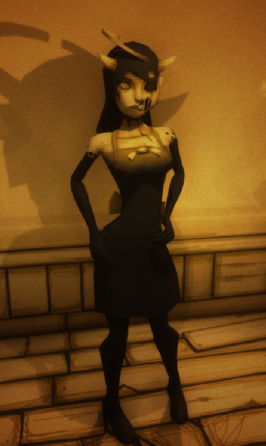
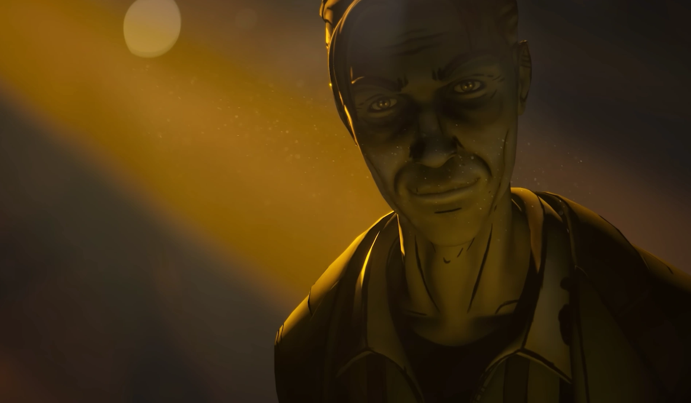
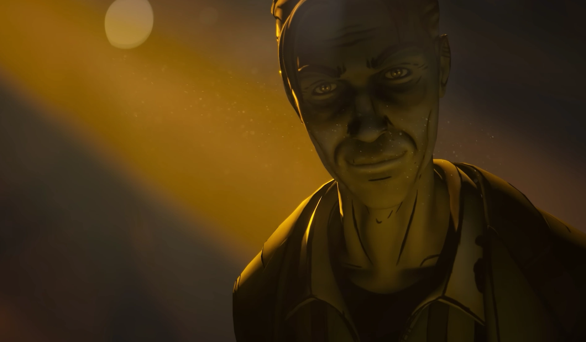

You joined the underground cabaret today
Oh hey there, tell me your name
You try to run and tell the world
But you're stranded in a darkened cave
Oh Henry we hate you the same
So listen up my friend
There's more that meets the eye
You power up the studio
And bring them to life
Now play the beat that trickles
Through the halls
Or else your life is nevermore
Don't worry chum
It's not the music that dies
Now listen up
Our life support machine
Was brought to life by remarkable hands
Forget about the hell we've seen
The time has come to revive our band
So bang the drums to a rhythm
Captivating the beat
And press the keys on the piano
For the ritual please
The song's alive with the night
With your help we'll revive
The devil's advocate
Is staring right through your lies
You're just returning our old strings tonight
I hope you turn up the light now
Can I get an amen in here? (AMEN)
You see the magic of art
It would tear you apart if you knew
Can I get an amen in here? (AMEN)
This magic is fueled by your heart
But the dreams in his eyes were untrue He had bigger plans for the band
By demand
We came back to his darkened cell
You're going to break us out of this hell
We've been stars since the rhythm days
But our instruments have all grown tired
And in the end our only dream was to dance
They took the dance away we got retired
But that was long ago
We have a new chance of face
We've turned it up a couple notches with a brand new pace
You think that they all just erased us
Betrayed us, enslaved us
But the deed is done
And now we want to get out
Now listen up
Ain't it nice to be underground
With a good ol' friend like me
So you notice that sign, we ain't lying
But sit down and take a seat
There's an exit for sure
But that's for shmucks
But a little bit of ink
And a couple of bucks
We can reopen the curtains
And show off the strut
But for goodness sake
You gotta just believe
You're just returning our old strings tonight
I hope you turn up the light now
Can I get an amen in here? (AMEN)
You see the magic of art
It would tear you apart if you knew
Can I get an amen in here? (AMEN)
This magic is fueled by your heart
But the dreams in his eyes were untrue He had bigger plans for the band
By demand
We came back to his darkened cell
You're going to break us out
Go to sleep my little sheep
It's time to rest your head
Whether alive or dead
I am the keeper of the key
That will set us all free
I bring the demon back to life
There's a song I sing that shows us the light
Even in the lighter side of hell
We sing with delight
Play the notes that I require
This will please my desire
You have given me the tools to restart this fire
There's a twisted fate
That controls us, and betrays us
My friends have a death wish
And all of this is him to blame
Now we've brought him to his knees
Your only hope to escape this
Is to embrace this
We need your help to keep this demon at bay
Let's end this today
You're the conductor of this performance now Henry
Will you take their word, or ours
Golly I hope this works
You turned on this machine
Now you have to believe
Can I get an amen in here?
You see the magic of art
It would tear you apart if you knew
Can I get an amen in here?
This magic is fueled by your heart
But the dreams in his eyes were untrue He had bigger plans for the band
By demand
We came back to this world of grey
WELCOME TO THE GOSPEL OF DISMAY!
Welcome to the gospel of dismay...
 
